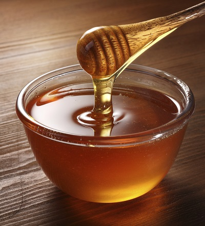
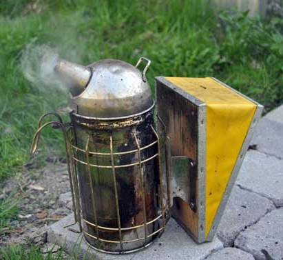
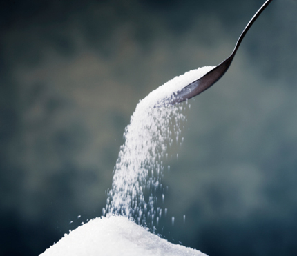

Information
Honungen
 Biodlaren kan skörda honungen genom att ovanpå binas yngelrum sätta en så kallad skattlåda, som avskiljs från yngelrummet med ett galler, ett s.k spärrgaller, som låter arbetsbina passera fritt men som inte släpper igenom den något större drottningen. Detta förhindrar äggläggning i skattlådorna. När biodlaren bedömer att bina har flugit färdigt på sin huvudsakliga nektarkälla, samlar han eller hon in skattlådorna och slungar vaxkakorna efter att först ha tagit bort det skyddande lager av vax som bina täcker de fulla cellerna med, det så kallade täckvaxet. En honungsslunga är i stora drag en centrifug med plats för ett par till hundratalet vaxkakor. Den relativt lättflytande, sirapslika nyslungade honung som är resultatet samlas upp i ett förvaringskärl, där den efter ett par dagar börjar kristallisera. Biodlaren måste då röra om i honungen för att den inte skall bli grynig. En enklare och effektivare metod än att röra honungen är att blanda in en liten mängd redan färdigkristalliserad honung. När honungen fått lagom fast konsistens tappar biodlaren upp den på burkar. När honungen har stelnat så kan den värmas upp till max 40 °C innan den tappas upp i glasburkar. Vid smältning av honung är det viktigt att inte värma den över 40 °C då detta gör att värmekänsliga enzymer i honungen inte kan bibehållas. Den färdiga honungens egenskaper är starkt beroende av vilka källor bina huvudsakligen samlat in nektar från. Som exempel ger raps en mycket fast, nästan vit honung med kraftig sötma. Ljung ger en mörk ton på honungen.
Biodlarens verktyg
 För att kunna få någorlunda kontroll på bina vid arbete med bikupan används rök, ofta från en rökpust. Som ett alternativ till rökpusten kan en sprayflaska med vatten användas. Röklukten gör att bina sätter sig och provianterar, antagligen som förberedelse inför flykt från annalkande brand. Som bränsle i rökpusten används ofta ruttet och torkat lövträ. Vissa biodlare använder även torv att elda med. Det går också bra att använda nejlikeolja som man kan köpa i vanliga butiker, det appliceras vanligen på en fuktig trasa som man sedan lägger över ramarna. Material som innehåller tjära (exempelvis fiberskivor) ska inte användas. Kupkniv är ett redskap som biodlare använder för att lyfta upp ramar och diversearbeten i bikupan. En av flera varianter av infångsburar. Skumplastbiten används för att försegla öppningen efter infångandet av drottningen. Ibland måste man fånga in en drottning, i samband med flytt till ny kupa eller avlägsnande av henne. Då används någon form av infångningsbur. En variant av infångningsbur består av en lång, transparent (i glas eller genomskinlig plast) cylinder med möjlighet att både öppna och stänga cylindern i båda ändar.
Socker under vintern
 I samband med slutskattningen är det lämpligt att invintra bina. När man tagit alla honungsramarna från bina har de ingen näring och det är viktigt att i stället ge dem sockerlösning. Sockerlösning gör man genom att blanda vanligt strösocker med vatten. Blandning bör vara 3:2, dvs tre kg socker med två l vatten. Om vattnet är varmt så går det lättare att blanda. Det är också en fördel att ge bina ljummen sockerlösning som de lättare kan dra ner. Sockerlösning kan man ge bina antingen med foderballonger eller lådfodrare. I en lådfodrare kan man ge hela sockerblandningen på en gång. Med ballonger måste man tillsätta sockerlösningen vid flera tillfällen. Det varierar mellan samhällena och vissa år går det fort och andra år drar de bara ner en del av sockerlösningen. Ett normalstarkt samhälle behöver mellan 18-25 kg foder för att kunna överleva vintern. Om biodlaren har skattat bina (tagit honung som de producerat under året) måste de utfodras med något annat. Det är vanligt att ge bina en 60% sockerlösning som består av 60% vikt strösocker och 40% vikt vatten.